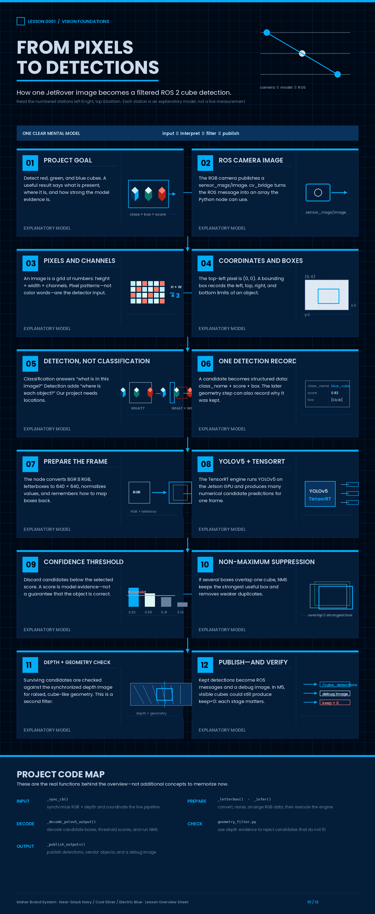
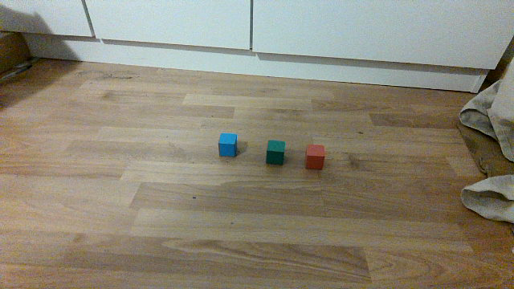
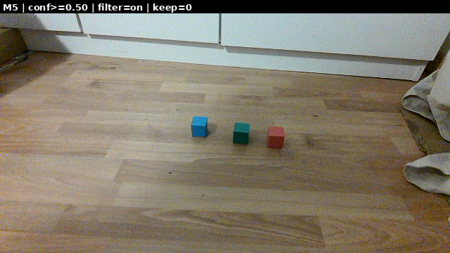

Software · AI · Robotics / Learning system
Lesson 0001 — From pixels to detections
Before we study YOLO internals, we need one clear mental model: how a picture becomes a useful answer containing an object name, a location, and a confidence score.
How to use this lesson
Do not try to memorize every term. Read one section, interact with its visual, then explain the idea in your own words. The goal is understanding the data flow, not reciting a framework tutorial.

The question this lesson answers
The JetRover camera continuously produces images. Our project must turn each image into structured information such as:
class: red_cube
location: a rectangle in the image
confidence: a model score supporting the predictionThat result is then published through ROS 2 so that another program—or a human looking at a debug image—can use it.
1. What are we trying to recognize?
Our task is to detect three object classes:
red_cubegreen_cubeblue_cube
The word object matters. The system should not merely say that a color appears somewhere in the picture. It should identify a cube-shaped object and indicate where that object is.
Figure 1. The result we want: a class label, a bounding box, and a confidence score for each visible cube.
2. What is an image?
A digital image is a rectangular grid of pixels. Each pixel stores numerical color values. A color image has multiple channels—for example, one channel for red, one for green, and one for blue.
In this project, the camera image enters ROS 2 as a sensor_msgs/Image. cv_bridge converts it into an image array that Python can work with. The current node asks for a BGR OpenCV image in cube_detection_node.py:442–445; before inference, cube_detection_node.py:508–510 reverses the channel order for the neural network.
For now, the important idea is:
camera image = numbers arranged as height × width × channelsThe model does not receive the word “blue.” It receives numerical pixel patterns and has learned that certain patterns often correspond to a blue cube.
Image coordinates
Computer-vision images normally use the top-left corner as the origin:
xincreases as we move to the right;yincreases as we move down;- a location is written as a pixel coordinate such as
(x, y).
Interactive: click a point on the image coordinate system
Select a colored point to see its example coordinate.
3. Classification versus object detection
These two terms are related, but they answer different questions.
Classification
“This image contains a red cube.”
Detection
“There is a red cube at this location.”
Our project
Find multiple cubes and report each location.
Because the JetRover may see several cubes in one frame, we need object detection. A detection includes both a category and a location.
4. The anatomy of one detection
In our project, an internal CubeDetection contains:
class_name → which class was predicted
score → the model's confidence score
box → the pixel rectangle around the object
reason → why the later geometry step kept itThe first three fields are the basic object-detection idea. The reason field is specific to this project's later depth/geometry filtering.
Confidence is evidence, not truth
A score of 0.80 does not guarantee that the prediction is correct. It means the model has produced relatively strong evidence according to its learned scoring system. A model can be confidently wrong, especially when the new camera scene differs from its training images.
5. The complete runtime pipeline
Here is the full process for one synchronized RGB/depth pair:
Figure 2. The beginner-level mental model of the live node. Each stage has one job.
Interactive: inspect one pipeline stage
Camera: The vendor camera publishes RGB and depth images. The node receives them through ROS 2 topics.
6. What happens after the model predicts?
The neural network usually produces more candidate boxes than we want to publish. Some candidates are weak. Several candidates may describe the same physical cube with slightly different rectangles.
Two common ideas help:
- Confidence thresholding: discard candidates below the selected score threshold.
- Non-maximum suppression (NMS): when several boxes overlap the same object, keep the strongest useful box and remove duplicates.
Today we only need the intuition. Lesson 2 will explain how the current YOLO output is decoded and how NMS is implemented in _decode_yolov5_output().
Interactive: overlapping candidates before and after NMS
The model can make multiple overlapping guesses. NMS reduces them to a cleaner result.
Confidence thresholding
The confidence threshold is a decision boundary. Raising it usually makes the system more selective; lowering it usually allows more candidates through. Neither direction automatically makes the model correct.
Interactive: change the confidence threshold
At threshold 0.50, the illustrative 0.82 and 0.58 candidates remain visible.
7. Map the mental model to the real code
The current node has one main synchronized callback and several focused helpers:
| Code | Plain-language job |
|---|---|
_letterbox()lines 72–94 | Resize and pad the camera image while remembering how to map boxes back to the original image. |
_decode_yolov5_output()lines 97–145 | Turn model numbers into image boxes, class names, scores, and a de-duplicated list. |
_sync_cb()lines 437–502 | Coordinate image conversion, inference, geometry filtering, publishing, and timing. |
_infer()lines 504–530 | Prepare one RGB frame and execute the TensorRT engine. |
_publish_outputs()lines 532–541 | Send kept detections and the optional debug image to ROS 2 topics. |
The model is not the whole application
YOLO/TensorRT performs one important stage: producing predictions. The ROS 2 node is responsible for receiving camera data, preparing it, interpreting the model output, applying the depth check, and publishing messages.
8. A real example from this project
The following two images come from the M5 live test. A human can see three small cubes in the RGB frame. The debug overlay says keep=0 because no candidate passed the current model and geometry pipeline at the selected threshold.


conf>=0.50, filter on, keep=0.This is not a contradiction. It is a useful engineering observation: the image, the model's candidate predictions, the confidence threshold, and the geometry filter are separate stages. A later lesson will explain why the current model performs better on its original validation images than on this real JetRover view.
9. Check your understanding
Which sentence describes object detection?
What does a confidence score mean?
Why do we need NMS?
10. Tiny read-only exercise
No code change is required for this exercise.
- Look at Figure 1 and describe one detection using the three words class, box, and confidence.
- Open
recognition_of_different_colored_cubes/cube_detection_node.pyand find_letterbox(),_infer(), and_publish_outputs(). Write one sentence describing the job of each. - Look at the two M5 images above. Explain why “three cubes are visible” and “keep=0” can both be true.
11. Explain it back
Try to explain the following without reading the previous sections:
One-minute explain-back
“The camera produces an image. The node prepares that image and gives it to the detector. The detector proposes objects, and each proposal has a class, a box, and a score. Weak or duplicate proposals are filtered. The remaining information is published as ROS 2 messages and a debug image.”
If you can explain that flow, you understand the central idea of this lesson. The details of the neural-network tensor come next.
12. Project note and next lesson
The current model and node use the class order 0: blue_cube, 1: green_cube, 2: red_cube. The project-definition document still shows a different class-ID table, so that documentation conflict must be reconciled before another fine-tuning run. We will not silently guess when class IDs matter.
Lesson 2 will answer:
How does YOLO turn one image into many candidate predictions, and how does the current code decode those predictions into final boxes?
Primary references
- Ultralytics YOLOv5 documentation — the model family used by this project.
- PyTorch beginner workflow — data, models, optimization, and saved models.
- ROS 2 topics — the publish/subscribe model used for camera and detection streams.
- Current detection node source — the implementation this lesson maps to.
- Learning plan — the complete teaching sequence.